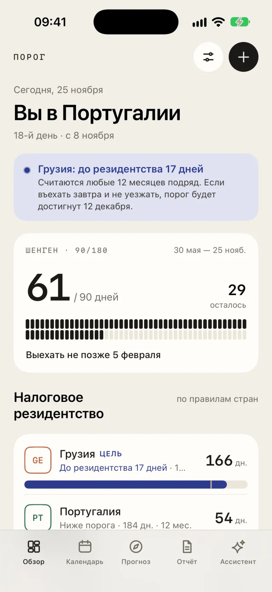
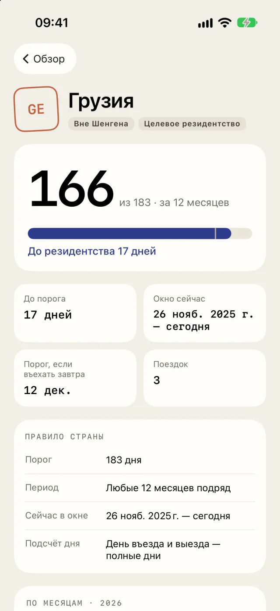
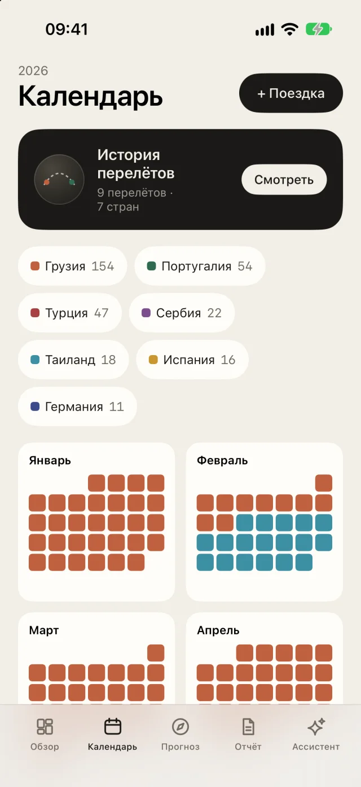
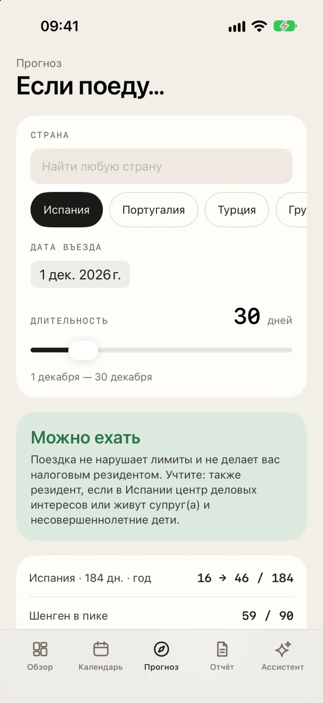

Подсказки поездок
По времени и месту фото и событий календаря. Обработка только на устройстве.


Porog следит за правилами налогового резидентства и шенгенским лимитом 90/180 и предупреждает, пока вы не перешли порог.



Последние 180 дней, включая сегодня
Каждый день шенгенское правило смотрит на 180 дней назад, считая сегодняшний.
Все дни в Шенгенской зоне складываются. День въезда и день выезда тоже считаются.
Окно сдвигается. День, который из него вышел, снова можно потратить.
Сколько можно пробыть, если въехать завтра? Двигайте ползунок: каждый день поездки сверяется со своим окном.
Пример с тремя прошлыми поездками.


Все перелёты года в движении. Крутите глобус, приближайте, нажмите на любую страну.
Porog знает период, порог и способ подсчёта дней. Выберите страну.
Правила упрощены. Porog не заменяет консультацию налогового специалиста и официальные источники.Поездки хранятся на устройстве и в вашем iCloud. У Porog нет сервера, и мы не видим ваши поездки.


По времени и месту фото и событий календаря. Обработка только на устройстве.
Наведите камеру на посадочный талон, и поездка заполнится сама.
По умолчанию выключено. Хранятся только страна и дата, только на этом устройстве.

Уведомление заранее, на выбранном вами дне.

Проверьте, как поездка изменит счётчики, ещё до покупки билетов.

Весь год на одном экране и все перелёты на глобусе.

Справка о пребывании в PDF и экспорт в CSV.
Билеты, штампы и брони прикладываются к поездкам.
Отправьте карточку с днями тому, с кем едете.

Счётчики на экране «Домой» и экране блокировки, действия для Siri и Быстрых команд.

Счётчики на запястье.

Ваш год путешествий на большом экране.

iPhone · iPad · Apple Watch · Apple TV